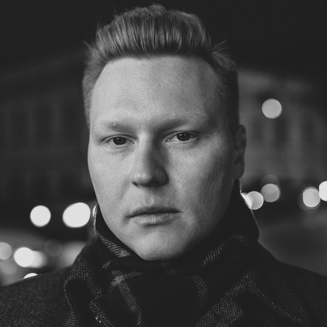

Технический лидер с опытом развития крупных web-платформ и продуктовых экосистем. Специализация: архитектура, platform engineering, reliability, cross-team delivery.
За последние 4 года в Т-Банке прошёл путь от Senior Frontend Engineer до архитектора, совмещая роли технического лидера, платформенного инженера, архитектора и технического проектного менеджера.
Сильная сторона — способность брать ownership за сложные технические инициативы целиком: от ресерча и архитектуры до организационного запуска, согласования между командами, внедрения процессов и сопровождения эксплуатации.
Прошёл путь от Senior Frontend Engineer до архитектора, взяв на себя ответственность за архитектуру frontend-платформы, технические процессы, reliability, delivery и развитие инженерной культуры.
Разработка frontend для системы тарификации в ведущей медицинской страховой компании с нуля.
Frontend Architecture, Platform Engineering, Microfrontends, SSR, WebView/PWA
Kubernetes, CI/CD, Observability, Monitoring, Performance Optimization
Technical Leadership, Technical Project Management, Mentorship, Cross-team Coordination
Reliability Engineering, Incident Management, Technical Roadmaps, ADR
Product-oriented Engineering, Delivery Management, Technical Discovery
React ecosystem, TypeScript, SSR, Microfrontends, Platform Engineering, Kubernetes, CI/CD, Monitoring & Observability, Grafana, S3/CDN, WebView, PWA, Technical Architecture, Reliability Engineering, Delivery Management, Technical Documentation
Ищу команды и продукты, где инженер может напрямую влиять на пользовательский опыт и развитие продукта, а обратная связь от пользователей приходит быстро и остаётся осязаемой.
Наиболее комфортные роли — на пересечении архитектуры, platform engineering, technical leadership и delivery management, где можно одновременно влиять на техническое качество системы, эффективность команд и ценность продукта.